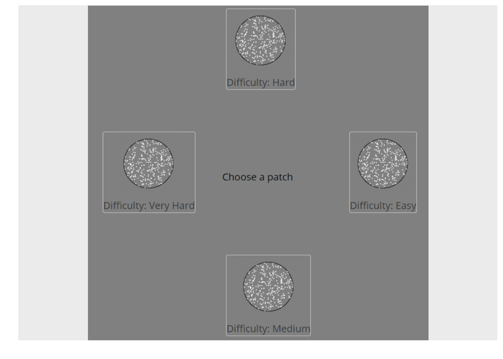
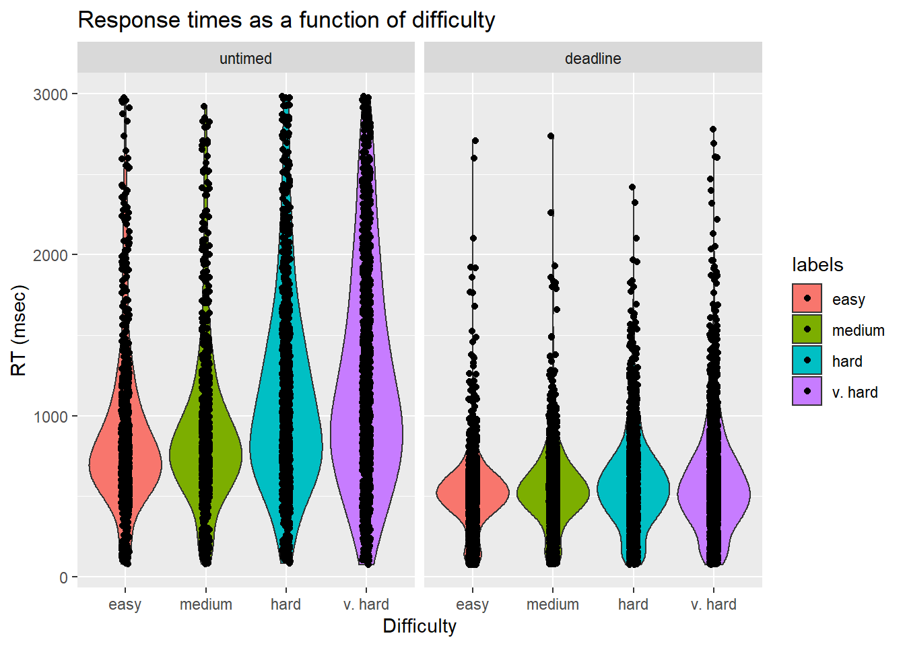
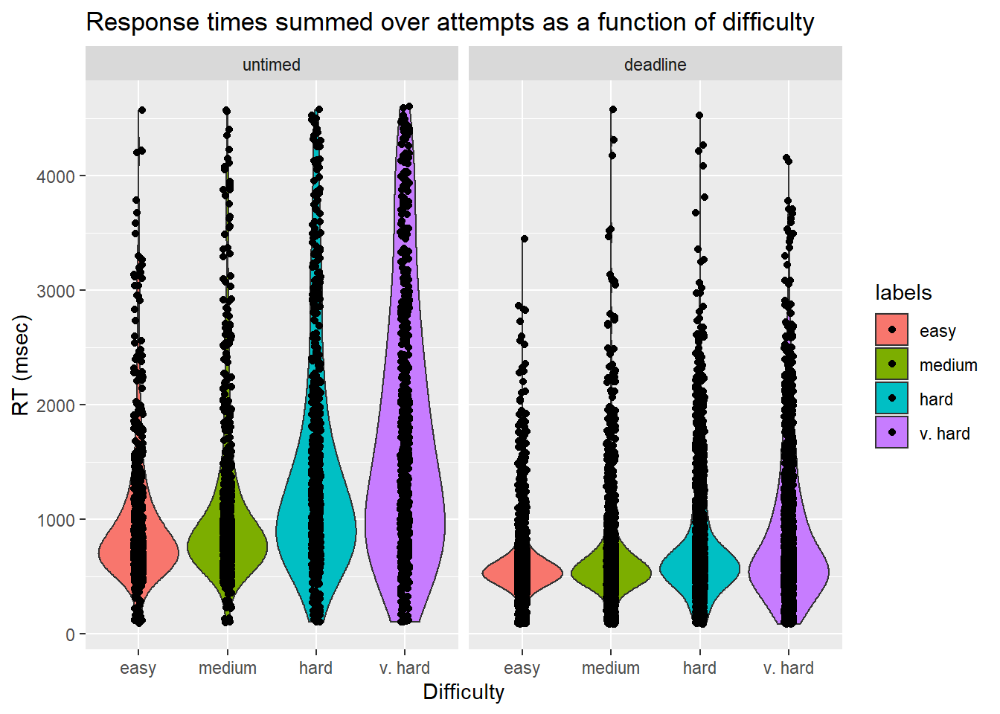
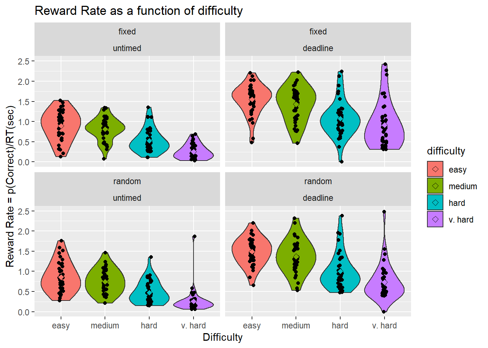
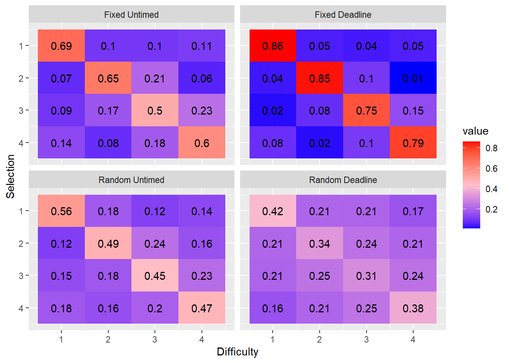
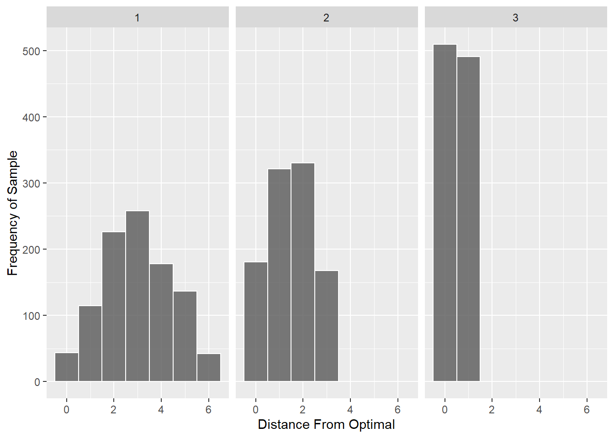
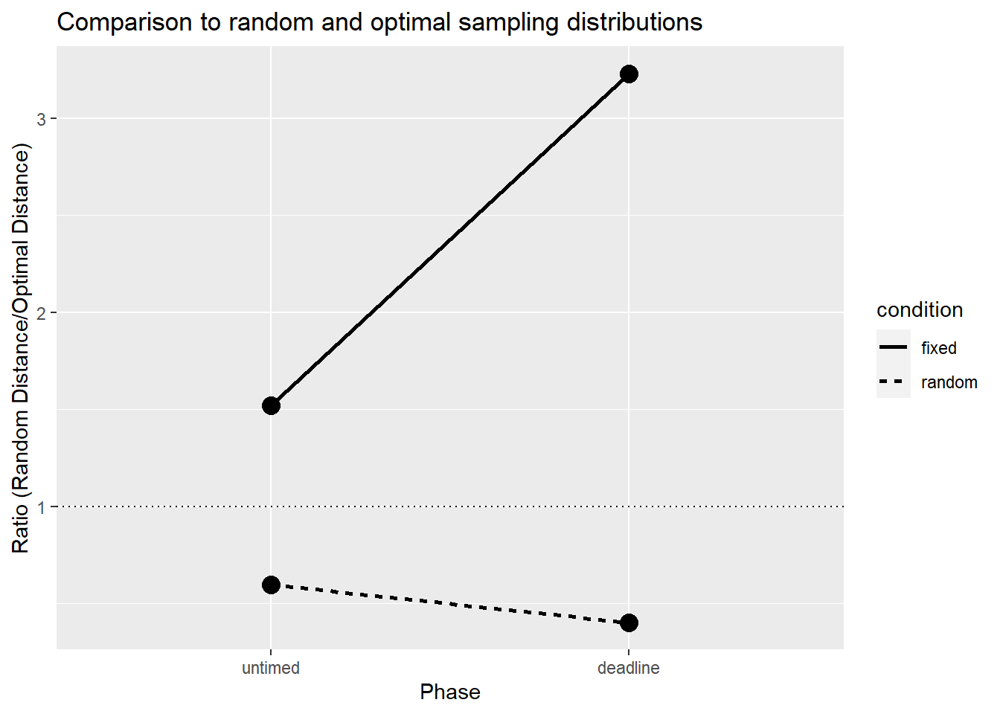

Experiment 1: RDK Direction Judgement, 4 Tasks, No Error Penalty
knowlabUnimelb
2020-10-29
Last updated: 2022-11-09
Checks: 7 0
Knit directory: SCHEDULING/
This reproducible R Markdown analysis was created with workflowr (version 1.7.0). The Checks tab describes the reproducibility checks that were applied when the results were created. The Past versions tab lists the development history.
Great! Since the R Markdown file has been committed to the Git repository, you know the exact version of the code that produced these results.
Great job! The global environment was empty. Objects defined in the global environment can affect the analysis in your R Markdown file in unknown ways. For reproduciblity it’s best to always run the code in an empty environment.
The command set.seed(20221107) was run prior to running
the code in the R Markdown file. Setting a seed ensures that any results
that rely on randomness, e.g. subsampling or permutations, are
reproducible.
Great job! Recording the operating system, R version, and package versions is critical for reproducibility.
Nice! There were no cached chunks for this analysis, so you can be confident that you successfully produced the results during this run.
Great job! Using relative paths to the files within your workflowr project makes it easier to run your code on other machines.
Great! You are using Git for version control. Tracking code development and connecting the code version to the results is critical for reproducibility.
The results in this page were generated with repository version 67e1aac. See the Past versions tab to see a history of the changes made to the R Markdown and HTML files.
Note that you need to be careful to ensure that all relevant files for
the analysis have been committed to Git prior to generating the results
(you can use wflow_publish or
wflow_git_commit). workflowr only checks the R Markdown
file, but you know if there are other scripts or data files that it
depends on. Below is the status of the Git repository when the results
were generated:
Ignored files:
Ignored: .Rproj.user/
Ignored: analysis/patch_selection.png
Ignored: analysis/patch_selection_8.png
Ignored: analysis/patch_selection_avg.png
Ignored: analysis/site_libs/
Untracked files:
Untracked: analysis/Notes.txt
Untracked: analysis/archive/
Untracked: analysis/fd_pl.rds
Untracked: analysis/fu_pl.rds
Untracked: analysis/prereg/
Untracked: analysis/reward rate analysis.docx
Untracked: analysis/rewardRate.jpg
Untracked: analysis/toAnalyse/
Untracked: analysis/wflow_code_string.txt
Untracked: archive/
Untracked: data/archive/
Untracked: data/create_database.sql
Untracked: data/dataToAnalyse/
Untracked: data/exp6a_typing_exponential.xlsx
Untracked: data/exp6b_typing_linear.xlsx
Untracked: data/rawdata_incEmails/
Untracked: data/sona data/
Untracked: data/summaryFiles/
Untracked: models/
Untracked: old Notes on analysis.txt
Untracked: presentations/
Untracked: references/
Untracked: spatial_pdist.Rdata
Unstaged changes:
Modified: data/README.md
Note that any generated files, e.g. HTML, png, CSS, etc., are not included in this status report because it is ok for generated content to have uncommitted changes.
These are the previous versions of the repository in which changes were
made to the R Markdown
(analysis/analysis_exp1_labelled_nodelay.Rmd) and HTML
(docs/analysis_exp1_labelled_nodelay.html) files. If you’ve
configured a remote Git repository (see ?wflow_git_remote),
click on the hyperlinks in the table below to view the files as they
were in that past version.
| File | Version | Author | Date | Message |
|---|---|---|---|---|
| Rmd | 67e1aac | knowlabUnimelb | 2022-11-09 | Publish data and analysis files |
Daniel R. Little1, Ami Eidels2, and Deborah J. Lin1
1 The University of Melbourne, 2 The University of Newcastle
Method
Participants
We tested 97 participants (62 F, 28 M, 7 Undeclared). Participants were recruited through the Melbourne School of Psychological Sciences Research Experience Pool (Mean age = 19.48, range = 17 - 49). Participants were reimbursed with credit toward completion of a first-year psychology subject. Datasets from 3 subjects were excluded for completing the experiment more than once; i.e., only the first of the datasets for these subjects was retained.
Forty-nine were assigned to the Fixed Difficulty condition. In this condition, the location of easy, medium, hard, and very hard random dot kinematograms (RDK’s) was held constant across trials.
Forty-eight were assigned to the Random Difficulty condition. In this condition, the location of easy, medium, hard, and very hard random dot kinematograms (RDK’s) were randomized from trial to trial.
The Fixed Difficulty experiment was completed before the Random Difficulty experiment. Participants only completed one of these.
Design
In each condition, participants completed multiple trials in which they selected and completed RDK tasks. On each trial, participants were shown a set of four RDKs labelled “Easy”, “Medium”, “Hard”, and “Very Hard”. The labels corresponded to the coherence of the RDK; that is, the proportion of dots moving in a coherent direction, which was set to 80%, 50%, 20%, and 0% for the Easy, Medium, Hard, and Very Hard locations, respectively. From the set of four RDKs, participants selected and completed one RDK at a time in any order. The goal of each trial was to complete as many as possible before a deadline. If an incorrect RDK response was made, that RDK was restarted at the same coherence but with a new randomly sampled direction, and the participant had to respond to the RDK again. A new task could not be selected until the RDK was completed successfully.

Participants first completed 10 trials with a long (30 sec) deadline to help participants learn the task, explore strategies, and allow for comparison to a short-deadline condition. We term this the no deadline condition since the provided time is well beyond what is necessary to complete all four RDK’s. Next, participants completed 30 trials with a 6 second deadline.
Data Cleaning
Subjects completed the experiment by clicking a link with the uniquely generated id code. Subjects were able to use the link multiple times; further, subjects were able to exit the experiment at any time. Consequently, the datafile contains partially completed data for some subjects which needed to be identified and removed.
A handful of subjects (N = 15) had less than chance accuracy on the easiest RDK indicating equipment problems or a misunderstanding of task directions. We removed these participants from further anlaysis leaving 42 and 40 in the fixed and random location conditions, respectively.
Data Analysis
We first summarize performance by answering the following questions:
Task completions
- How many tasks are completed on average?
Across both conditions, participants completed 3.9 tasks during the phase and NaN tasks during the phase.
| condition | phase | mean |
|---|---|---|
| fixed | untimed | 3.907090 |
| fixed | deadline | 3.388294 |
| random | untimed | 3.887500 |
| random | deadline | 3.270067 |
As one might expect, there were fewer tasks completed under a deadline than without a deadline (\(\beta_{deadline}\) = 0.54, SE = 0.07).1 There was no difference between conditions, (\(\beta_{condition}\) = 0.02, SE = 0.05), and no interaction between deadline and location condition (\(\beta_{condition \times deadline}\)= 0.08, SE = 0.11). 2
RDK performance
We next analysed performance on the RDK discriminations. We then asked:
- What was the average completion time and accuracy of the easy, medium, hard, and very hard tasks?
RTs became shorter and more accurate as the difficulty of the RDK became easier. As expected, the RTs were shorter under a deadline than without a deadline. We visualised the response times in two ways: First, we simply took the average of each attempt on each RDK.

Second, we computed the time to complete an RDK as the cumulative sum across multiple attempts within a trial (termed Cumulative RT or cRT). That is, if an error is made and the RDK needs to be repeated, then the total RT is the sum of both attempts.

We further broke down RTs by condition, deadline, and difficulty.
| condition | phase | difficulty | n | Mean.Correct | SE.Correct | Mean.RT | SE.RT | Mean.crt | SE.crt |
|---|---|---|---|---|---|---|---|---|---|
| fixed | untimed | easy | 712 | 0.88 | 0.01 | 1108.01 | 51.42 | 1253.37 | 65.31 |
| fixed | untimed | medium | 528 | 0.88 | 0.01 | 1112.20 | 45.10 | 1266.36 | 54.53 |
| fixed | untimed | hard | 460 | 0.76 | 0.02 | 1390.44 | 56.22 | 1821.72 | 86.57 |
| fixed | untimed | v. hard | 457 | 0.55 | 0.02 | 1849.33 | 68.70 | 3333.47 | 165.28 |
| fixed | deadline | easy | 1281 | 0.89 | 0.01 | 518.26 | 5.76 | 581.46 | 8.82 |
| fixed | deadline | medium | 1356 | 0.86 | 0.01 | 549.75 | 6.73 | 629.84 | 11.92 |
| fixed | deadline | hard | 1329 | 0.76 | 0.01 | 601.29 | 7.92 | 754.96 | 13.93 |
| fixed | deadline | v. hard | 1288 | 0.62 | 0.01 | 598.48 | 9.31 | 846.19 | 16.89 |
| random | untimed | easy | 741 | 0.88 | 0.01 | 1084.88 | 39.76 | 1230.81 | 56.18 |
| random | untimed | medium | 557 | 0.79 | 0.02 | 1023.30 | 41.28 | 1283.68 | 56.52 |
| random | untimed | hard | 493 | 0.70 | 0.02 | 1353.25 | 56.33 | 1937.68 | 90.44 |
| random | untimed | v. hard | 447 | 0.52 | 0.02 | 1534.86 | 62.46 | 2946.45 | 140.13 |
| random | deadline | easy | 1444 | 0.82 | 0.01 | 468.98 | 6.09 | 567.78 | 8.33 |
| random | deadline | medium | 1413 | 0.79 | 0.01 | 489.26 | 6.45 | 608.70 | 10.53 |
| random | deadline | hard | 1320 | 0.66 | 0.01 | 504.61 | 7.60 | 708.76 | 14.69 |
| random | deadline | v. hard | 1339 | 0.58 | 0.01 | 527.30 | 8.76 | 823.15 | 18.90 |
Statistical analysis, using a 2 condition \(\times\) 2 phase \(\times\) 4 difficulty between-within ANOVA, of the effect of these factors on accuracy confirmed the effect of difficulty, F(3, 231) = 173.57, p = 0, \(\eta^2\) = 0.4. RDK responses in the fixed condition were more accurate than RDK responses in the random condition, F(1, 77) = 7.19, p = 0.01, \(\eta^2\) = 0.03. RDK responses were not more accurate under a deadline then under no deadline, F(1, 77) = 2.21, p = 0.14, \(\eta^2\) = 0. However, there was a significant phase \(\times\) difficulty interaction, F(3, 231) = 3.48, p = 0.02, \(\eta^2\) = 0.01 reflecting a greater increase from easy to very hard when there was no deadline compared to when there was a deadline.
We used the same analysis to examine the effect of condition, phase, and difficulty on RT. We confirmed that RTs were shorter under a deadline, F(1, 77) = 180.2, p = 0, \(\eta^2\) = 0.39, and that RTs became shorter as the RDK’s became easier, F(3, 231) = 39.14, p = 0, \(\eta^2\) = 0.07. There was again an interaction between phase and difficulty, F(3, 231) = 38.74, p = 0, \(\eta^2\) = 0.05 indicating that RT decreased more with increasing dot coherence when there was no deadline compared to when there was a deadline. These results accord with the vast literature on RDK performance (see e.g., Ludwig & Evens, 2017).
Finally, we repeated the analysis using the cRT examining the effect of condition, phase, and difficulty. We confirmed that cRTs were shorter under a deadline, F(1, 77) = 190.78, p = 0, \(\eta^2\) = 0.35, and that RTs became shorter as the RDK’s became easier, F(3, 231) = 86.94, p = 0, \(\eta^2\) = 0.22. There was again an interaction between phase and difficulty, F(3, 231) = 64.63, p = 0, \(\eta^2\) = 0.15 indicating that RT decreased more with increasing dot coherence when there was no deadline compared to when there was a deadline.
Reward Rate
To confirm that coherence offered a good proxy for difficulty (and hence, that an optimal order of easiest to hardest was maintained), we calculated the reward rate for each patch. Reward rate can be defined as “the proportion of correct trials divided by the average duration between decisions” (Gold & Shadlen, 2002), and is tantamount, in our task, to percentage of correct responses per unit time (Bogacz et al, 2006). For our purposes, we can fix time at 1 sec calculate the Reward Rate as the number of RDK tasks completed in 1 sec.
By assumption, the weight of all tasks is the same and is equal to, say, 1 point each. Normally, we would expect performance on easier tasks to be both faster and more accurate. The optimal strategy to complete as many tasks as possible (thereby maximising reward rate) should then be to approach them by order of difficulty, easy to hardest. But what if, for example, on hard tasks, people guess quickly? They could gain points and waste very little time, possibly leading to a sizable reward rate.
Take the following hypothetical example: suppose you complete an easy task with perfect accuracy but take a long time to make the perceptual decision, say MRT = 2 sec. Suppose then the very difficult condition is too hard to judge. It would take > 2 secs to judge correct, but you can and guess quickly and average a time less than 2 sec, say MRT = 0.5 sec. With two response alternatives your odds are 50% so over the long run you are better off starting with the hardest task, with chance accuracy and no time lost (of course, one may also guess on the easy task, and we can check the data to see if people do so). The next section calculates reward rate for each of the four difficulty conditions, based on empirical data delineating % correct and MRT.
Inspection of the figure reveals that RR is roughly monotonically increasing when tasks become easier. Under such conditions, the optimal order of task-completion should be easy-to-hardest. This could change in a predictable manner if people value differently easy and hard tasks (overweight completion of harder tasks). The only notable exception was in the fixed, no deadline task, where the easy and medium RDK conditions had equal RR.

Optimality in each condition
Having now established that the RDK’s are ordered in accuracy, difficulty, and reward rate, it is clear that the task set presented to each subject has an optimal solution, ordered from easiest to most difficult. We now ask:
- What is the proportion of easy, medium, hard, and very hard tasks selected first, second, third or fourth?
We first compute the marginal distribution of the ranks of each of the tasks; in other words, what are the proportions of the ranks of each task in each rank position. These matrices indicate the proportions of responses for each difficulty level which were chosen first, second, third, or fourth, respectively. The matrix from a dataset in which choice is always optimal would have ones on the diagonal and zeros on the off-diagonal.

- Do the marginal distributions differ from uniformity?
We tested whether the marginal distributions were different from uniformally random selection using the fact that the mean rank is distributed according to a \(\chi^2\) distribution with the following test-statistic: \[\chi^2 = \frac{12N}{k(k+1)}\sum_{j=1}^k \left(m_j - \frac{k+1}{2} \right)^2\] see (Marden, 1995).
| condition | phase | chi2 | df | p |
|---|---|---|---|---|
| fixed | untimed | 375.71 | 3 | 0 |
| fixed | deadline | 2358.85 | 3 | 0 |
| random | untimed | 161.89 | 3 | 0 |
| random | deadline | 197.34 | 3 | 0 |
It is evident at a glance that the ordering of choices is more optimal when the locations are fixed; that is, the proportions on the diagonal are higher. When the locations are fixed, choice order becomes more optimal under a deadline. By contrast, when locations are random, responding becomes less optimal under a deadline. This likely reflects the additional costs of having to search for the appropriate task to complete. This search is minimised in the fixed location condition.
We compared the location conditions and phases using chi-2 analysis.
| Comparison | chi2 | df | p |
|---|---|---|---|
| Fixed: Untimed vs Deadline | 270.98 | 15 | 0 |
| Random: Untimed vs Deadline | 92.70 | 15 | 0 |
| Untimed: Fixed vs Random | 73.61 | 15 | 0 |
| Deadline: Fixed vs Random | 1604.07 | 15 | 0 |
- How optimal were responses?
The next analysis computed the distance between the selected order and the optimal order (easiest to very hard for that trial), which ranges between 0 (perfect match) and 6 (maximally distant), for 4 options.
What we want is the distance of the selected options from the optimal solutions, which is the edit distance (or number of discordant pairs) between orders. However, because a participant may run out of time, there may be missing values. To handle these values, for each trial, we find the orders which partially match the selected order and compute three the average distance of those possible orders and the optimal solution (avg_distance).
The following figure compares the avg_distance between the fixed difficulty and random difficulty conditions as a function of deadline condition and phase. For each of these measures, lower values reflect respones which are closer to optimal.
Selection model
We can treat each task selection as a probabilistic choice given by a Luce’s choice rule (Luce, 1959), where each task is represented by some strength, \(\nu\). The probability of selecting task \(i_j\) from set \(S = \{i_1, i_2, ..., i_J \}\), where J is the number of tasks, is:
\[p\left(i_j |S \right) = \frac{\nu_{i_j}}{\sum_{i \in S} \nu_{i}}. \]
Plackett (1975) generalised this model to explain the distribution over a sequence of choices (i.e., ranks). In this case, after each choice, the choice set is reduce by one (i.e., sampling without replacement). This probability of observing a specific selection order, \(i_1 \succ ... \succ i_J\) is:
\[p\left(i_j |A \right) = \prod_{j=1}^J \frac{\nu_{i_j}}{\sum_{i \in A_j} \nu_{i}}, \]
where \(A_j\) is the current choice set.

Sampling distribution anlaysis
In order to characterise performance, we examined three sampling distributions for comparison to our data. The first is the sampling distribution of edit distances from optimal assuming that orders are sampled uniformly at random. The second distribution assumes that the first choice was optimal but the remaining orders are sampled at random. Finally, the third distributions assumes that the first two choices are selected optimally but that the remaining are randomly selected. It is clear that the mode of the distribution moves from a distance of 3 to a distance of 0 as the sampling distribution summarises orders which better conform to optimality.
To characterise the optimality of each condition at each point in the experiment, we first computed the ks-test statistic between the data (the average partial distance data) and the random order distribution and the first-two optimal distribution. Since smaller ks-statistics indicate a closer match between the distributions, we then took the ratio of the ks-statistics (random over first two-optimal). Values less than one indicate that the data are more consistent with random than optimal responding. Values greater than one indicate that the data are more consistent with optimal rather than random responding.

This figure efficiently summarises the main result: responding is more optimal in the fixed deadline condition particularly during the last ten trials; in the random deadline conditions, responding was closer to a random sampling distribution than to an optimal sampling distribution.
Selection Choice RTs
| condition | phase | mrt_sel1 | mrt_sel2 | mrt_sel3 | mrt_sel4 |
|---|---|---|---|---|---|
| fixed | untimed | 1521 | 1319 | 1054 | 967 |
| fixed | deadline | 734 | 697 | 673 | 639 |
| random | untimed | 1856 | 1439 | 1217 | 1031 |
| random | deadline | 920 | 762 | 706 | 636 |
sessionInfo()R version 4.1.3 (2022-03-10)
Platform: x86_64-w64-mingw32/x64 (64-bit)
Running under: Windows 10 x64 (build 19042)
Matrix products: default
locale:
[1] LC_COLLATE=English_Australia.1252 LC_CTYPE=English_Australia.1252
[3] LC_MONETARY=English_Australia.1252 LC_NUMERIC=C
[5] LC_TIME=English_Australia.1252
attached base packages:
[1] stats4 grid stats graphics grDevices utils datasets
[8] methods base
other attached packages:
[1] pmr_1.2.5.1 jpeg_0.1-9 rstatix_0.7.0 lme4_1.1-29
[5] Matrix_1.4-0 png_0.1-7 reshape2_1.4.4 knitr_1.38
[9] hrbrthemes_0.8.0 english_1.2-6 gtools_3.9.2 DescTools_0.99.45
[13] forcats_0.5.1 stringr_1.4.0 dplyr_1.0.8 purrr_0.3.4
[17] readr_2.1.2 tidyr_1.2.0 tibble_3.1.6 ggplot2_3.3.5
[21] tidyverse_1.3.1 workflowr_1.7.0
loaded via a namespace (and not attached):
[1] minqa_1.2.4 colorspace_2.0-3 ellipsis_0.3.2 class_7.3-20
[5] rprojroot_2.0.3 fs_1.5.2 gld_2.6.5 rstudioapi_0.13
[9] proxy_0.4-27 farver_2.1.0 fansi_1.0.3 mvtnorm_1.1-3
[13] lubridate_1.8.0 xml2_1.3.3 splines_4.1.3 extrafont_0.18
[17] rootSolve_1.8.2.3 jsonlite_1.8.0 nloptr_2.0.0 broom_0.8.0
[21] Rttf2pt1_1.3.10 dbplyr_2.1.1 compiler_4.1.3 httr_1.4.2
[25] backports_1.4.1 assertthat_0.2.1 fastmap_1.1.0 cli_3.2.0
[29] later_1.3.0 htmltools_0.5.2 tools_4.1.3 gtable_0.3.0
[33] glue_1.6.2 lmom_2.9 Rcpp_1.0.8.3 carData_3.0-5
[37] cellranger_1.1.0 jquerylib_0.1.4 vctrs_0.4.1 nlme_3.1-155
[41] extrafontdb_1.0 xfun_0.30 ps_1.6.0 rvest_1.0.2
[45] lifecycle_1.0.1 getPass_0.2-2 MASS_7.3-55 scales_1.2.0
[49] hms_1.1.1 promises_1.2.0.1 expm_0.999-6 yaml_2.3.5
[53] Exact_3.1 gdtools_0.2.4 sass_0.4.1 stringi_1.7.6
[57] highr_0.9 e1071_1.7-11 boot_1.3-28 rlang_1.0.2
[61] pkgconfig_2.0.3 systemfonts_1.0.4 evaluate_0.15 lattice_0.20-45
[65] labeling_0.4.2 processx_3.5.3 tidyselect_1.1.2 plyr_1.8.7
[69] magrittr_2.0.3 R6_2.5.1 generics_0.1.2 DBI_1.1.2
[73] pillar_1.7.0 haven_2.5.0 whisker_0.4 withr_2.5.0
[77] abind_1.4-5 modelr_0.1.8 crayon_1.5.1 car_3.0-12
[81] utf8_1.2.2 tzdb_0.3.0 rmarkdown_2.13 readxl_1.4.0
[85] data.table_1.14.2 callr_3.7.0 git2r_0.30.1 reprex_2.0.1
[89] digest_0.6.29 httpuv_1.6.5 munsell_0.5.0 bslib_0.3.1 Throughout, we infer significance by examining whether 2 \(\times\) SE includes 0.↩︎
We compared three models: (1) a standard linear regression model with location condition, deadline, and their interaction as factors (BIC = 7381.32) ; (2) a multilevel regression model with an additional random intercept for each subject (BIC = 6461.97); and (3) a multilevel regression with a random intercept and random deadline coefficient for each subject (BIC = 6225.19). The third model was preferred on a BIC basis; hence, we report the details of that model only.↩︎